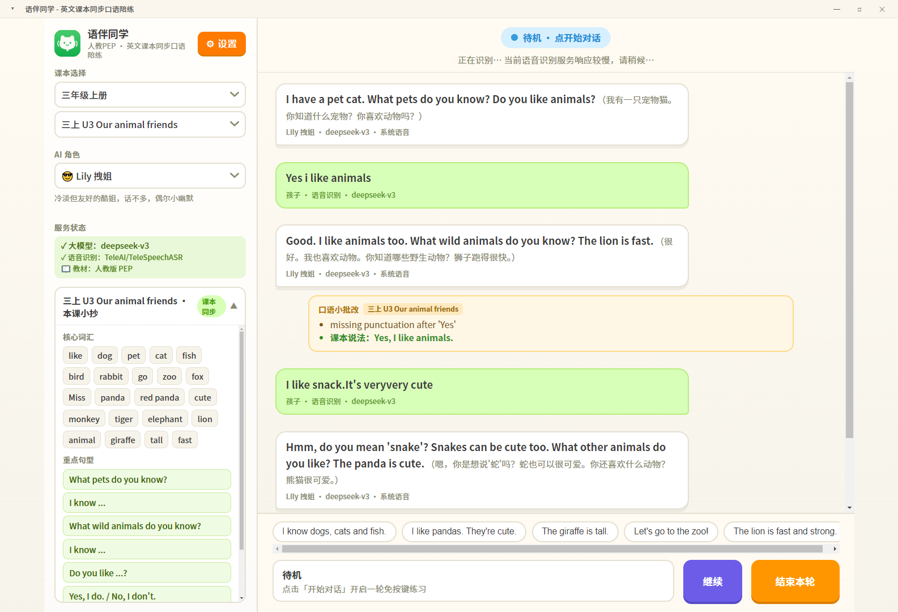
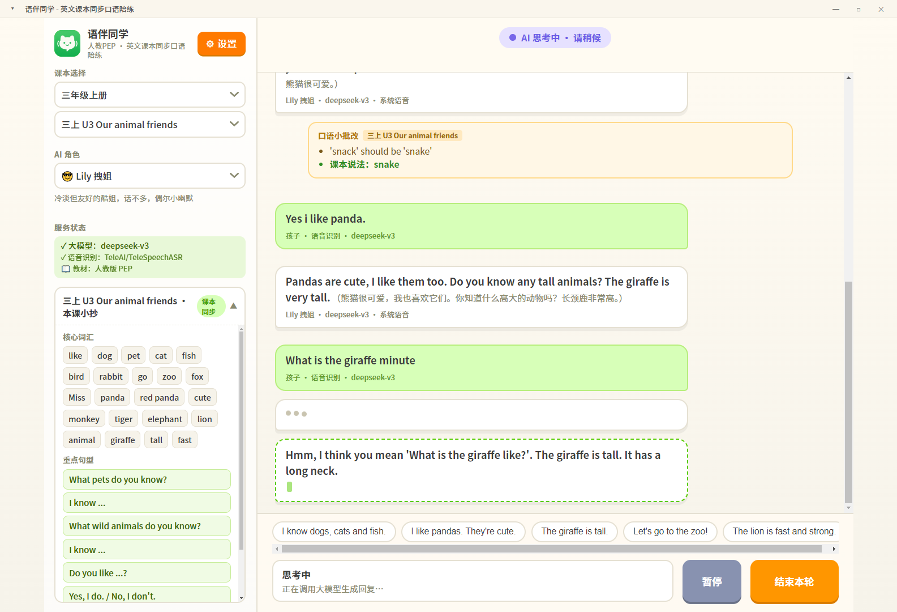

从开口到纠错，一套流程闭环完成，家长只需设置一次 API Key。
自研静音检测，孩子说完自动停顿识别，AI 自动回复，全程无需点任何按钮。
内置人教版PEP、外研社、译林、沪教、北师大 5 套教材，词汇句型严格按课本，设置里随时切换。
孩子说慢、说错、中途停顿，AI 也能结合上下文理解并回应，不打击开口积极性。
孩子朗读课本句子，讯飞 ISE 从准确度、流利度、完整度三个维度打分并给出鼓励语。
AI 回复边生成边逐字显示，告别长时间等待，对话节奏更接近真人聊天。
兼容 OpenAI 格式，DeepSeek、智谱GLM、通义千问、豆包、硅基流动等主流模型一键切换。
系统 SAPI 离线语音 + Edge 在线高音质语音，没装语音包也能一键切换在线引擎。
API Key 等配置只存在软件根目录，不写系统盘，不上传任何数据，保护隐私。
左侧栏一键切换，角色改变即时影响 AI 的说话风格，让孩子保持新鲜感。
默认角色
冷淡但友好的酷姐，话不多，偶尔来点小幽默，是 v1.0 的经典风格。
耐心鼓励型
温柔耐心的英语老师，多鼓励孩子，纠错语气温和，适合胆小的孩子。
轻松幽默型
活泼搞笑、爱开玩笑，让孩子放松大胆开口，把练习变成游戏。
严谨纠错型
严谨认真，注重发音和语法准确性，纠错更细致，适合进阶巩固。
状态提示、流式输出、中英文自由对话——孩子和家长实际使用时的真实画面。

语音、教材等关键状态即时提醒，黄色横幅一眼看懂，家长不用摸索。

回复逐字显示，等待感更低，对话节奏更接近真人聊天。
中文、中英混合提问都可以，AI 用英文回复并附中文翻译。
人教版PEP、外研社、译林、沪教、北师大，从三年级到六年级，词汇、重点句型、开场白、快捷短语全部内置，跟着学校进度练。
人民教育出版社
外语教学与研究出版社
译林出版社
上海教育出版社
北京师范大学出版社
在设置里选择教材版本即可切换（切换后重启软件生效）；对话时左下角「课小抄」实时显示当前单元词汇和句型。
在线验证版，Windows 10 及以上适用。便携版免安装，解压即用；安装版自动创建桌面快捷方式。
如果下载按钮无效，请前往 GitHub Releases 页面 下载对应文件。
Windows 10 及以上（Windows 11 完美兼容）。Windows 10 以下版本无法运行。
便携版约 67 MB 磁盘空间；内存最低 2 GB，推荐 4 GB 以上。
必须联网（大模型与语音识别走云端）；需要可用的麦克风；在线语音引擎免装语音包。